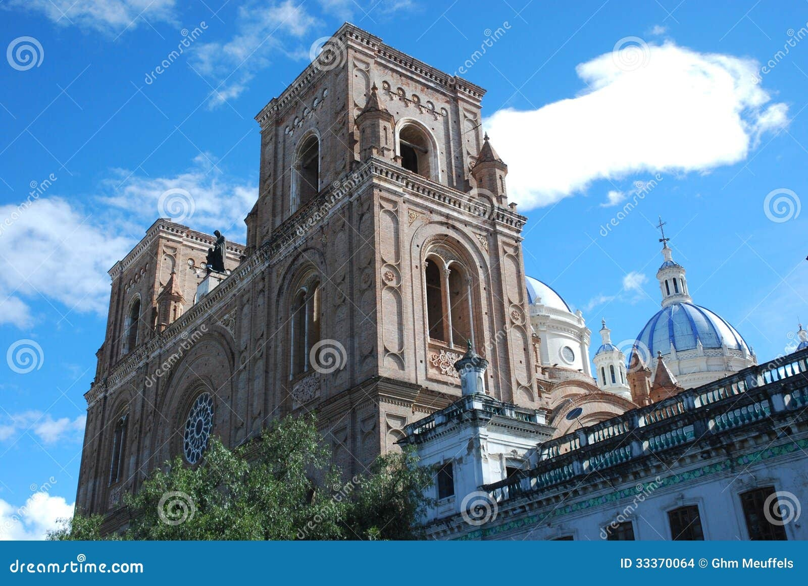
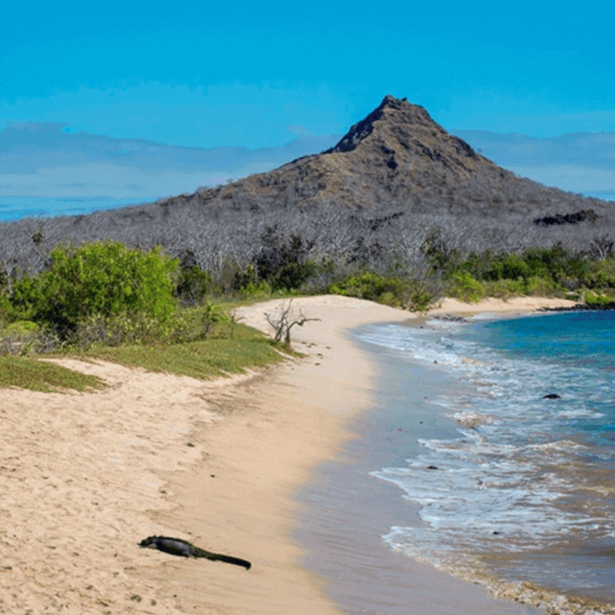
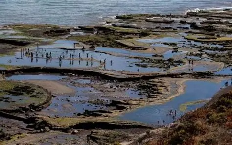
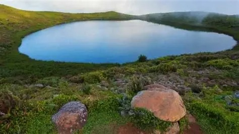
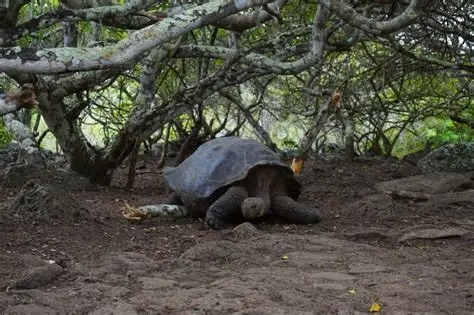
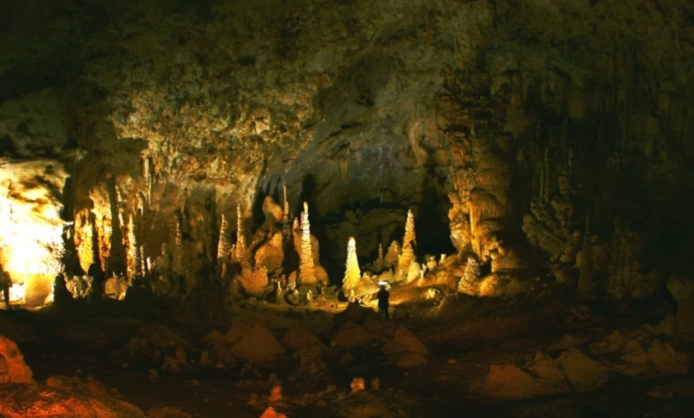

-La Catedral de la Inmaculada Concepción:
Una iglesia con murales que mezclan simbolismo cristiano y la flora y fauna de Galápagos,
ubicada cerca del malecón, en pleno centro de la ciudad
-Playa Baquerizo:
Una ensenada en forma de herradura accesible tras una caminata desde Tijeretas. Ambiente tranquilo
ideal para snorkeling con tortugas marinas, fragatas y leones marinos
-La Lobería y El Barranco:
Cerca del centro urbano, esta zona cuenta con colonias de lobos marinos, buen sitio para surf y sendero costero
hasta acantilados donde anidan aves como piqueros y fragatas
- Laguna El Junco:
Ya mencionada brevemente, pero vale resaltarla: es el único lago de agua dulce en todas las Galápagos. Se encuentra en la parte alta de
la isla, dentro de un cráter, rodeado de vegetación y aves como fragatas y pinzones
-Reserva de Tortugas “La Galapaguera”:
Centro de crianza y conservación de tortugas gigantes endémicas de San Cristóbal. Aquí puedes verlas en
estado semi-natural y aprender sobre su ciclo de vida.
-Cueva del Brujo:
Una cueva natural ubicada en una zona de acantilados al sur de la isla. Su nombre proviene de leyendas
locales. Puedes explorar la cueva y los alrededores en una caminata escénica